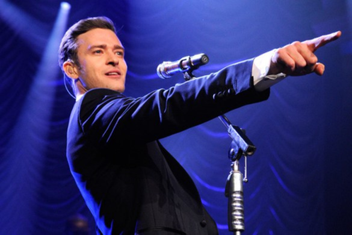
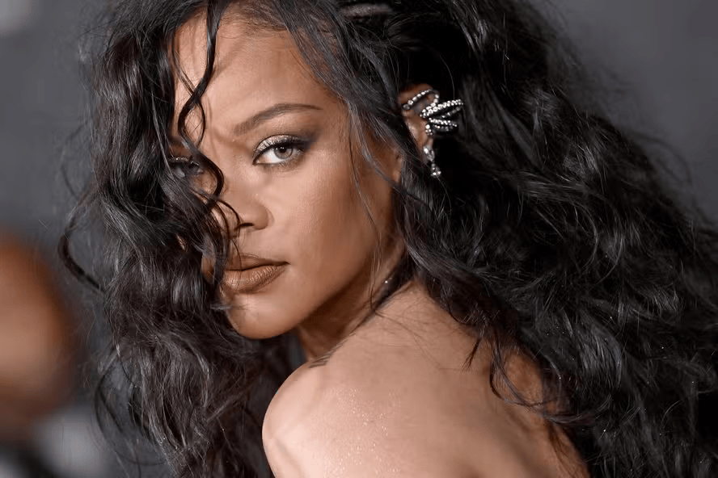
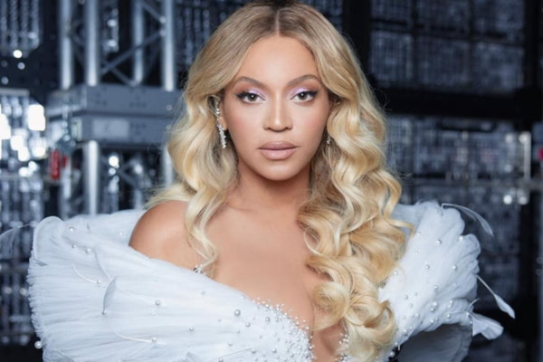
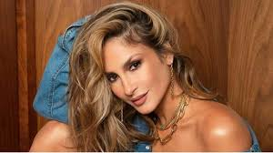

VAMOS CONHECER UM POUCO DO UNIVERSO MUSICAL DO ANO SENSACIONAL DE 2006
TOP 3 CANTORES MAIS FAMOSOS INTERNACIONAIS E NACIONAIS EM 2006
INTERNACIONAIS:
JUSTIN TIMBERLAKE
Com o lançamento do seu álbum "FutureSex/LoveSounds", Justin Timberlake dominou as paradas com hits como "SexyBack" e "My Love".A carreira de Justin Timberlake é bastante diversificada e bem-sucedida, abrangendo música, atuação e empreendedorismo.Globalmente, Justin Timberlake é visto não apenas como um talentoso cantor e ator, mas também como um ícone cultural cuja influência se estende além da música para áreas como moda e entretenimento.
RIHANNA
Ela lançou seu segundo álbum, "A Girl like Me", que incluía sucessos como "SOS" e "Unfaithful", consolidando sua posição como uma das principais artistas pop do momento. Além de sua carreira musical e empreendimentos na moda e beleza, Rihanna é conhecida por seu ativismo social e filantrópico, especialmente em causas relacionadas à educação, saúde e direitos das mulheres. Rihanna é uma empresária de sucesso na indústria da moda e beleza. Ela lançou sua linha de cosméticos Fenty Beauty em 2017, conhecida por sua inclusão de tons para uma ampla variedade de tons de pele. Além disso, ela fundou a marca de moda Fenty, em colaboração com a LVMH, tornando-se a primeira mulher negra a liderar uma marca na história da LVMH.
BEYONCÉ
Beyoncé continuou sua ascensão como uma artista solo após o Destiny's Child, lançando seu segundo álbum, "B'Day", que incluía músicas como "Irreplaceable" e "Deja Vu", mantendo-se no topo das paradas. Após o fim do Destiny's Child, Beyoncé lançou sua carreira solo com o álbum "Dangerously in Love" em 2003, que incluiu sucessos como "Crazy in Love" e "Baby Boy". Desde então, ela lançou vários álbuns aclamados, incluindo "B'Day" (2006), "I Am... Sasha Fierce" (2008), "4" (2011), "Beyoncé" (2013) e "Lemonade" (2016).Beyoncé é reconhecida por suas performances ao vivo impressionantes, incluindo shows no Super Bowl e Coachella. Ela ganhou inúmeros prêmios, incluindo Grammy Awards e MTV Video Music Awards, e é frequentemente considerada uma das artistas mais influentes e poderosas do mundo.
NACIONAIS:
IVETE SANGALO
Conhecida como uma das maiores estrelas da música brasileira, Ivete Sangalo continuava a dominar as paradas com seu carisma e talento, lançando sucessos como "Poeira" e "Deixo". pulares da Bahia nos anos 90. Com ela, Ivete ganhou destaque nacional e lançou sucessos como "Beleza Rara" e "Arerê". Em suma, a carreira de Ivete Sangalo é um testemunho de sua paixão pela música, sua versatilidade artística e sua conexão única com o público brasileiro, estabelecendo-a como uma das maiores e mais queridas artistas do país.

Claudia Leitte
Ainda como vocalista do Babado Novo em 2006, Claudia Leitte já estava ganhando grande reconhecimento com hits como "Amor Perfeito" e "Pensando em Você". ChatGPT A carreira de Claudia Leitte é marcada por seu talento vocal excepcional, sua energia contagiante e seu papel como uma das principais artistas do axé e da música pop no Brasil.Em resumo, Claudia Leitte é uma figura central na música brasileira contemporânea, celebrada não apenas por sua voz poderosa e seu talento artístico, mas também por sua capacidade de conectar-se com o público através de sua música vibrante e suas performances cativantes
JORGE VERCILLO
Cantor e compositor conhecido por suas músicas que mesclam MPB e pop, Jorge Vercillo estava em ascensão em 2006 com canções como "Homem-Aranha" e "Monalisa". ChatGPT Em 2006, Jorge Vercillo já tinha uma carreira consolidada na música popular brasileira, especialmente no segmento da MPB (Música Popular Brasileira), com um estilo que mescla elementos de bossa nova, pop e romantismo. Em resumo, em 2006, Jorge Vercillo já era reconhecido como um talentoso músico e compositor, cuja música tinha uma base sólida na MPB contemporânea e continuava a conquistar admiradores pela qualidade de suas composições e pela sensibilidade de sua interpretação.